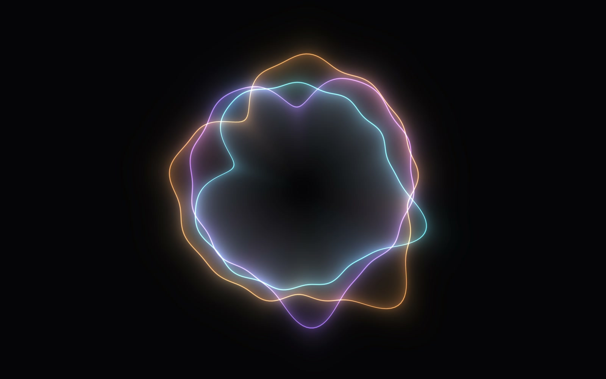
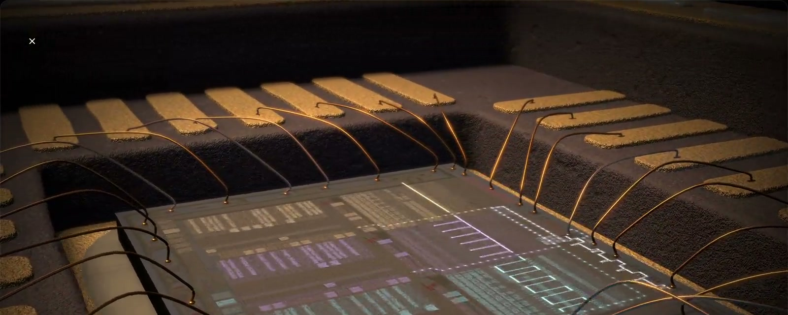
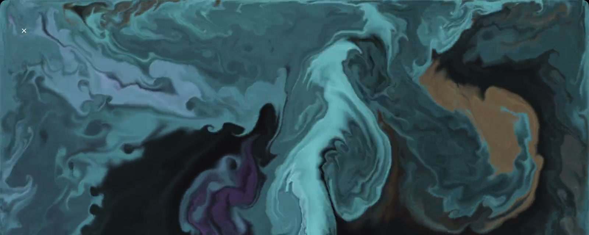
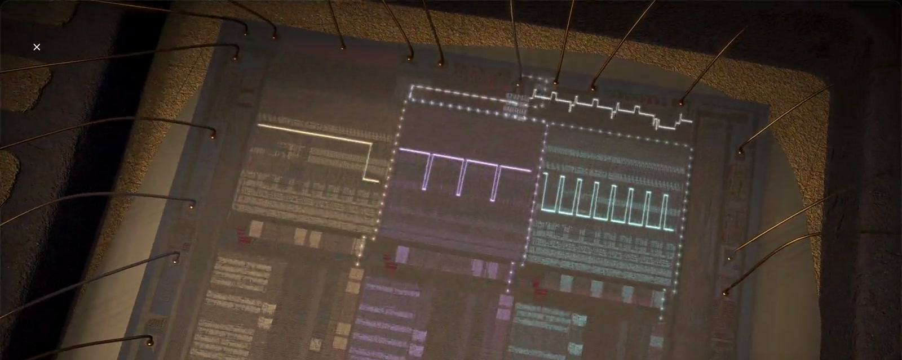
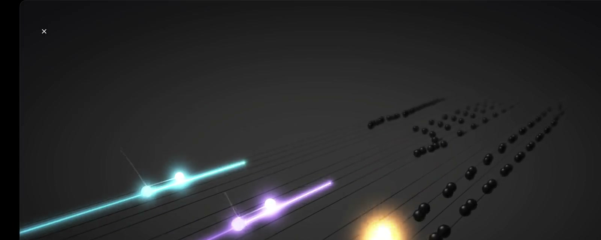
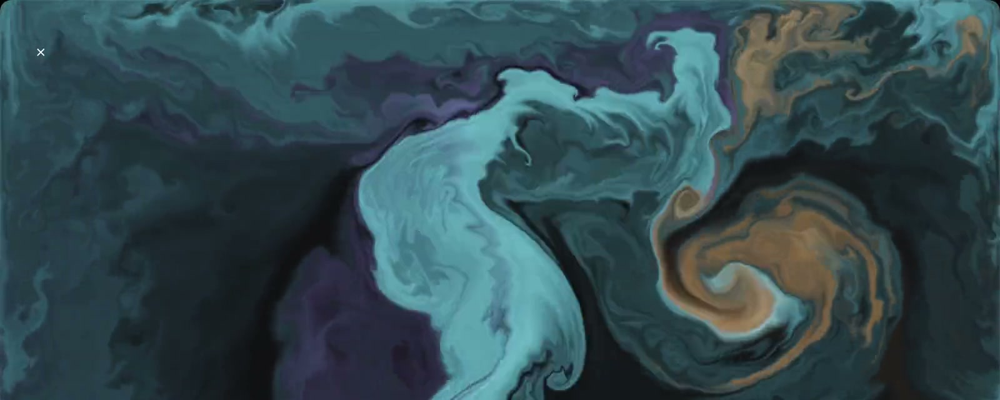
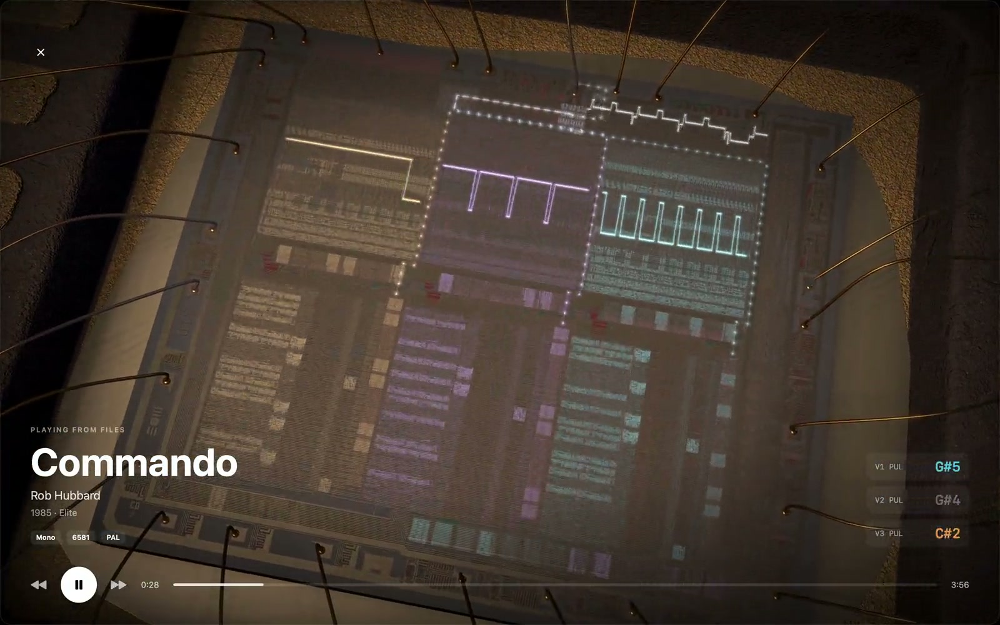
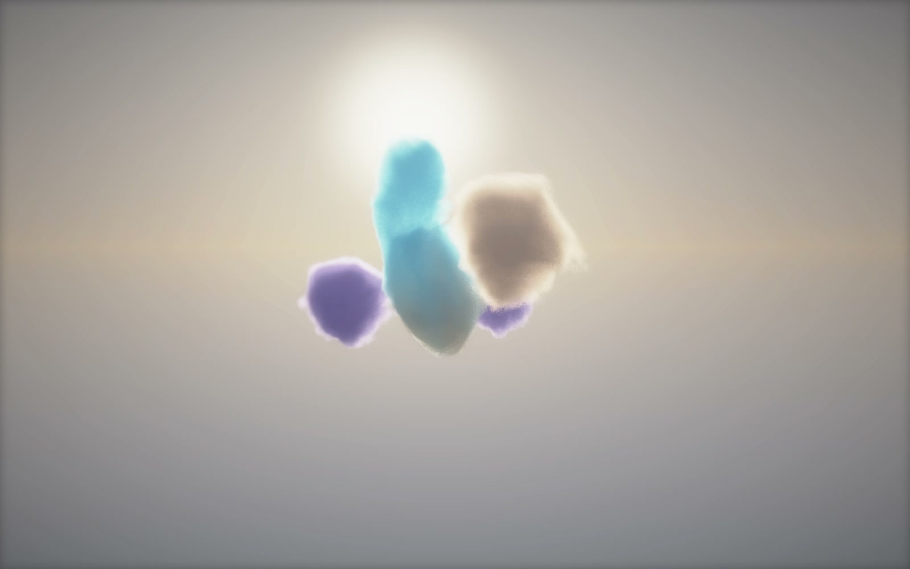
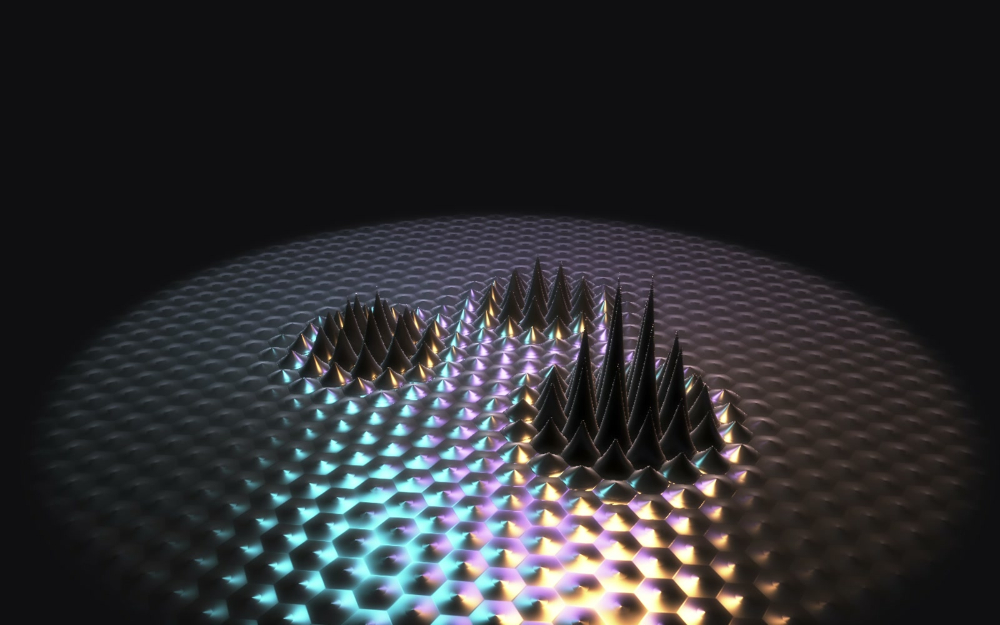
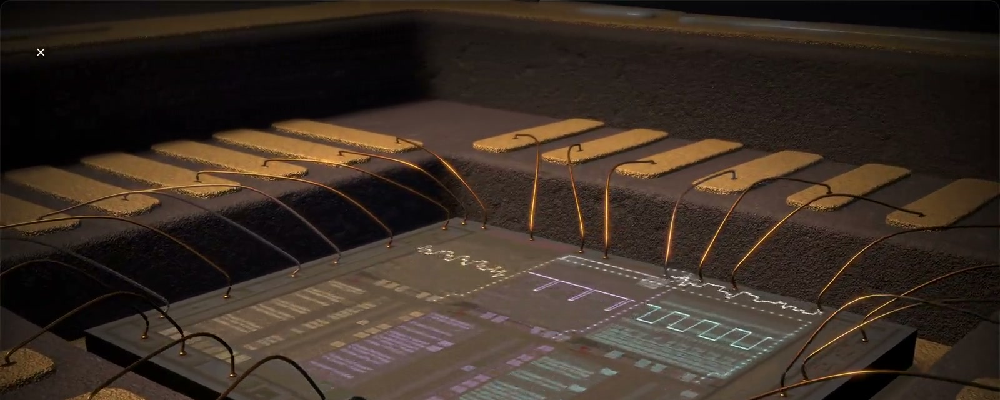

Halo
A glowing ring per voice that swells with its envelope and wobbles with its waveform's harmonics.
Mockup. The site's card today is the app icon and three tags. These put a real visualizer frame up front, from the new recordings. The previews underneath are the size the card actually gets in a chat or a feed.
Three directions. Each is drawn at its real 1200 × 630, and the PNG would be rendered from the same HTML.
A · Silicon, headline on the left

Every C64 tune.
Say what you'd like to hear.
B · Three visualizers side by side



Every C64 tune. Watch the chip play it.
C · Ink, full bleed, headline at the bottom

Every C64 tune.
Say what you'd like to hear.
At the size people see it
I'd pick A: the die is unlike any other card in a feed, and the headline stays readable at 300 px. B shows the variety but goes busy when it's small. C is the prettiest large but loses the most when shrunk.
A plain accent-text Share, no network icons, in two places: the stage caption for the visualizer showing, and next to each tile's name. On a Mac it copies the visualizer's link. On a phone it opens the system share sheet (Web Share API), so AirDrop, Messages and the apps people already use are there. Click one to try it.

And nine more.

A glowing ring per voice that swells with its envelope and wobbles with its waveform's harmonics.

Soft balls of smoke in a pale sky, a pair per voice, that swell with its level and glow in its color.

A pool of black liquid with a magnet for each voice, standing in spikes where it sounds.
A link preview comes from the page the link points to, and a #silicon on the end can't change it. So each visualizer gets a tiny static page of its own, at /v/silicon/, with its own card. That's 12 small HTML files on GitHub Pages and no server.
…/resonance/v/silicon/A visualizer's card

Silicon
The SID in 3D with the lid off, playing the tune.
As people see them
The bare visualizers use the same layout: the frame fills the card and the name sits in front.